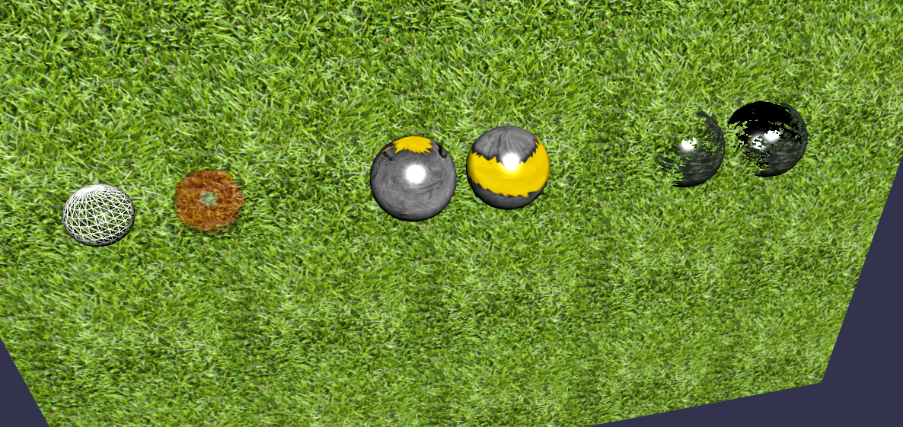
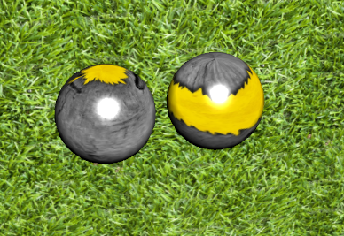
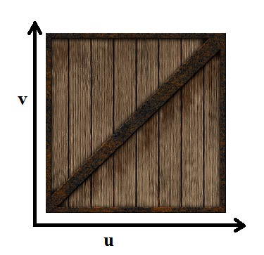
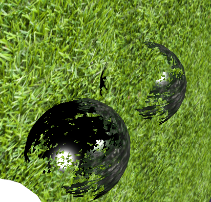
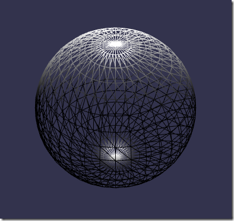

现在你已经可以在场景的任意位置建立基本网格元素了，我们现在将给这些网格赋予材质，定义这些网格看起来是什么样的。

我们是如此擅长编写createScene 函数以至于可以一边睡觉一边做，不是吗？所以让我们来和一个全向点光源和一个弧形旋转相机一起摇滚。然后，我们会创建一些基本网格元素来测试我们的材质。
function createScene() {
var scene = new BABYLON.Scene(engine);
var light = new BABYLON.PointLight("Omni", new BABYLON.Vector3(0, 100, 100), scene);
var camera = new BABYLON.ArcRotateCamera("Camera", 0, 0.8, 100, new BABYLON.Vector3.Zero(), scene);
//Creation of spheres
var sphere1 = BABYLON.Mesh.CreateSphere("Sphere1", 10.0, 6.0, scene);
var sphere2 = BABYLON.Mesh.CreateSphere("Sphere2", 2.0, 7.0, scene);
var sphere3 = BABYLON.Mesh.CreateSphere("Sphere3", 10.0, 8.0, scene);
[…]
//Positioning the meshes
sphere1.position.x = -40;
sphere2.position.x = -30;
现在，你只有一些灰颜色的网格。多么的单调！为了给它们赋予材质，你需要像这样建立一个材质对象：
var materialSphere1 = new BABYLON.StandardMaterial("texture1", scene);
然后把这个材质赋予你选择的物体，例如：
sphere1.material = materialSphere1;
或者把建立和赋予一步到位:
sphere1.material = new BABYLON.StandardMaterial("texture1", scene);
“我测试了我的场景，然后...什么变化也没有…”
确切来说，因为这个材质只是默认的材质（不赋予材质使用的就是默认材质）。你必须亲自把它设定成你需要的样子。你不需要改变网格本身，只修改材质对象。
“那么我该怎样调整我的材质来给我的物体一个完美的外观呢?”
这是通过调整材质对象的属性来做到的。让我们来看看都有哪些:
Alpha 合成和透明度可能有一点复杂。一篇专门的文章可以在这里找到. 你可能也想阅读关于它的维基百科网页. 在你使用 babylonjs粒子系统和babylonjs精灵系统时将遇到更多和它有关的问题。
Alpha 透明度, 通过百分比表示(%), 可以通过这样的方式赋予一个材质:
materialSphere1.alpha = 0.5;
漫反射性是物体受到光照时显示的本色（也就是通常来说“物体的颜色”）。你可以指定一种实色来作为材质的diffuseColor属性:
materialSphere1.diffuseColor = new BABYLON.Color3(1.0, 0.2, 0.7);
或者，你可以使用一个纹理:
materialSphere1.diffuseTexture = new BABYLON.Texture("grass.png", scene);

更多关于纹理的事:请确定使用正确的图片文件路径（相对的或绝对的）。支持的图片格式包括JPG, PNG, JPEG, BMP, GIF…（每一种你的浏览器支持的图片格式）
如果你想在你的网格上移动（偏移）材质，你可以使用“u偏移”和“v偏移”属性：
materialSphere1.diffuseTexture.uOffset = 1.5;
materialSphere1.diffuseTexture.vOffset = 0.5;
如果你想重复/拉伸显示图片样式（例如背景草地纹理就是五次重复），你可以使用“u缩放”和“v缩放”属性:
materialSphere1.diffuseTexture.uScale = 5.0;
materialSphere1.diffuseTexture.vScale = 5.0;
请记住那个(u,v)坐标系参考这样的坐标轴:（这张图片用了多少年了）

并且如果你的纹理图片本身具有透明度属性，你需要声明这一点:
materialSphere1.diffuseTexture.hasAlpha = true;
在这种情况下，alpha属性被用作透明度测试。但你可能需要使用它和图片的原有透明度混合。为达到这样的效果，你只需要设定：materialSphere1.useAlphaFromDiffuseTexture
所有的这些纹理设定同样对其他类型的基本材质生效。（.emissiveTexture, .ambientTexture, .specularTexture）我以后将提到。现在让我们继续讨论我们的基本材质属性
放射性指物体自己产生的光的颜色。你可以设定一个实色到 emissiveColor属性:
materialSphere1.emissiveColor = new BABYLON.Color3(1, .2, .7);
或者，你可以使用一个纹理:
materialSphere1.emissiveTexture = new BABYLON.Texture("grass.png", scene);
看更多关于纹理的事那一段. 当然，要注意把“diffuse”改成“emissive”.
“环境”可以被看做漫反射性的更高层次。发出的光被乘以漫反射颜色。当你想在纹理中使用光照贴图时这是十分有用的。你可以设置一种实色到ambientColor 属性:
materialSphere1.ambientColor = new BABYLON.Color3(1, 0.2, 0.7);
或者，你可以使用一个纹理:
materialSphere1.ambientTexture = new BABYLON.Texture("grass.png", scene);
看更多关于纹理的事 那一段. 当然，要注意吧“diffuse”改成“ambient”.
镜面是一束光在表面镜面反射是产生的颜色。你可以设置一种实色到specularColor 属性:
materialSphere1.specularColor = new BABYLON.Color3(1.0, 0.2, 0.7);
或者，你可以使用一个纹理:
materialSphere1.specularTexture = new BABYLON.Texture("grass.png", scene);
在使用纹理时，你可以设置 materialSphere1.useGlossinessFromSpecularMapAlpha为true来使用镜面贴图的alpha值表现物体的光泽度。
你也可以控制镜面材质如何处理alpha。默认情况下，镜面材质与alpha无关，但你可以设置materialSphere1.useSpecularOverAlpha
为true来让alpha与镜面值成反比。
同上,看更多关于纹理的事 那一段。当然，要注意把“diffuse”改成“specular”。（这些纹理的属性代表了Babylonjs预定义的几种“着色器”，不同的着色器对应不同的GPU算法，如果想深入学习可以参考http://learningwebgl.com/blog/?p=1658等教程，这一系列教程已有中文翻译版）
镜面属性还有一个额外的设定。镜面反射的尺寸和强度可以通过specularPower属性设定:
materialSphere1.specularPower = 32;
不透明度纹理的介绍将在这里，即将到来.
现在，我们浏览了基本材质的基本颜色和纹理属性。但工作还没有完成。这里是一些额外的实用的属性。
简单的说，“背面剔除”决定一个基本材质的背面是否可见。更精确的说，“渲染速度优化技术”决定图形对象的一个多边形是否可见。如果设为true或布尔值1，Babylon引擎将不会渲染使用这个材质的网格的被遮挡的面。这个属性默认为true，但在需要时可以设置为false。你可能想要阅读更多关于背面剔除的知识从关于它的维基百科网页.
在这个例子中，纹理具有alpha，并且前面的球体被设置了背面剔除属性为false，可以看到它黑色的内面:

materialSphere1.backFaceCulling = false;
你可以看到一个对象的线框图:
materialSphere1.wireframe = true;

再一次, 你可以看到这个教程的示例...振作点...通过浏览the Babylon.js Playground scene 4.
非常棒，加上这些材质之后你的场景比以前的看起来都要好！稍后我们将研究如何使用进阶的材质技术。但是现在，我们不得不学习怎样使用相机.